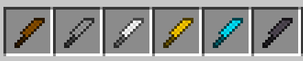
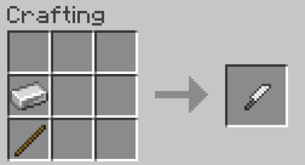
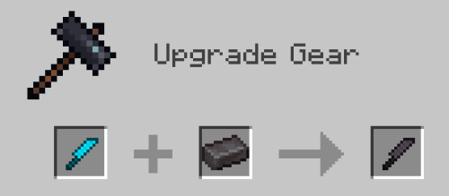

Knives
An easy to use melee weapon. It does a little less damage than swords but has a much higher attack speed. All you 1.8 pvp'ers, this is your time to shine.
To obtain each knife, use a stick and the building material per each type of knife you want, similar to any other tool, as depicted below.
 